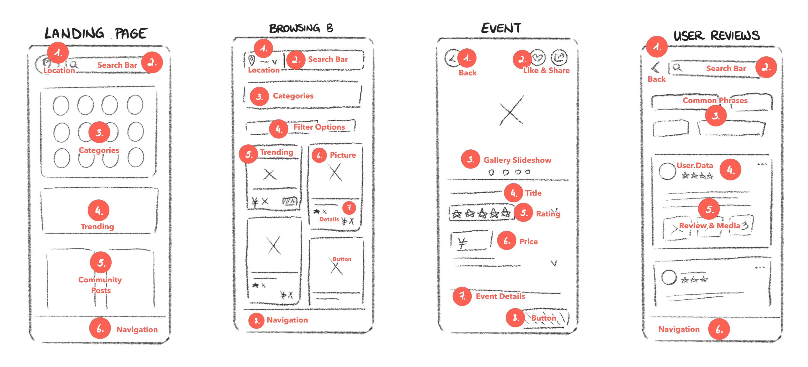
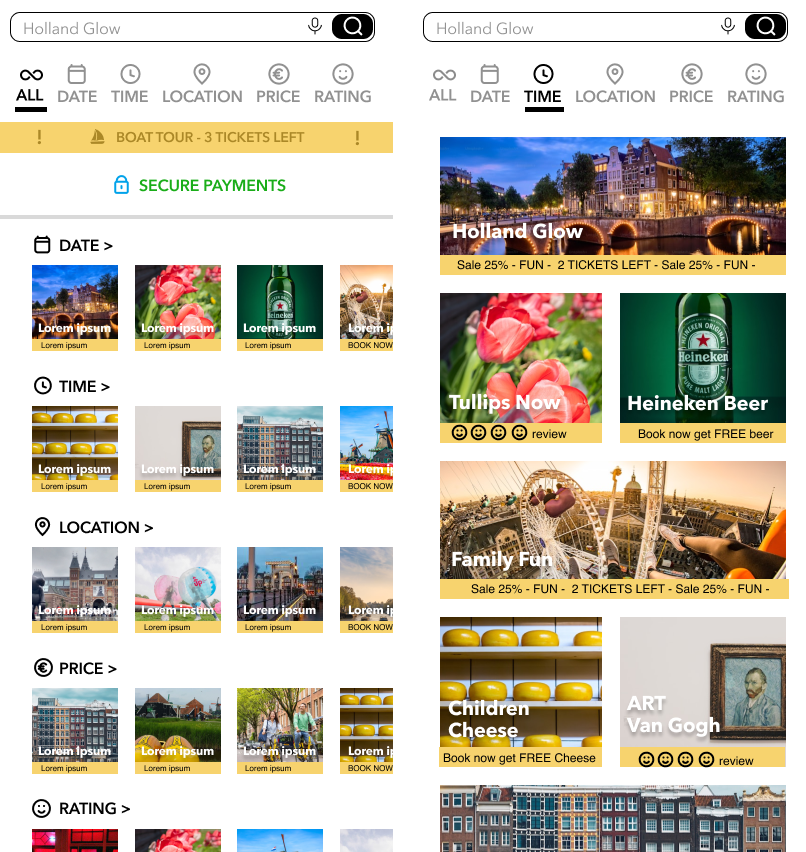
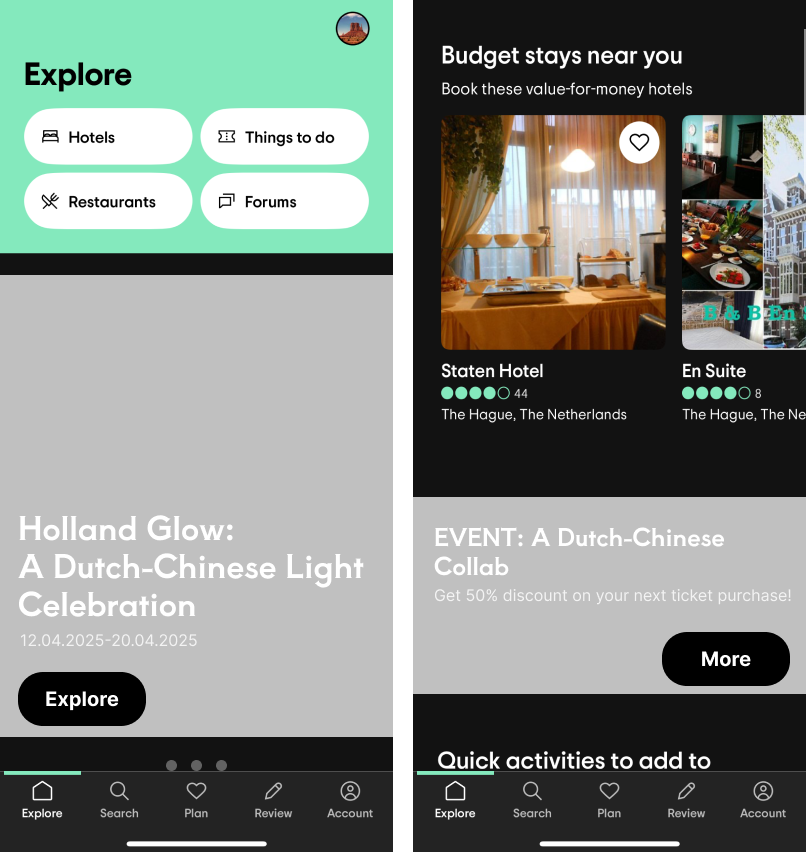
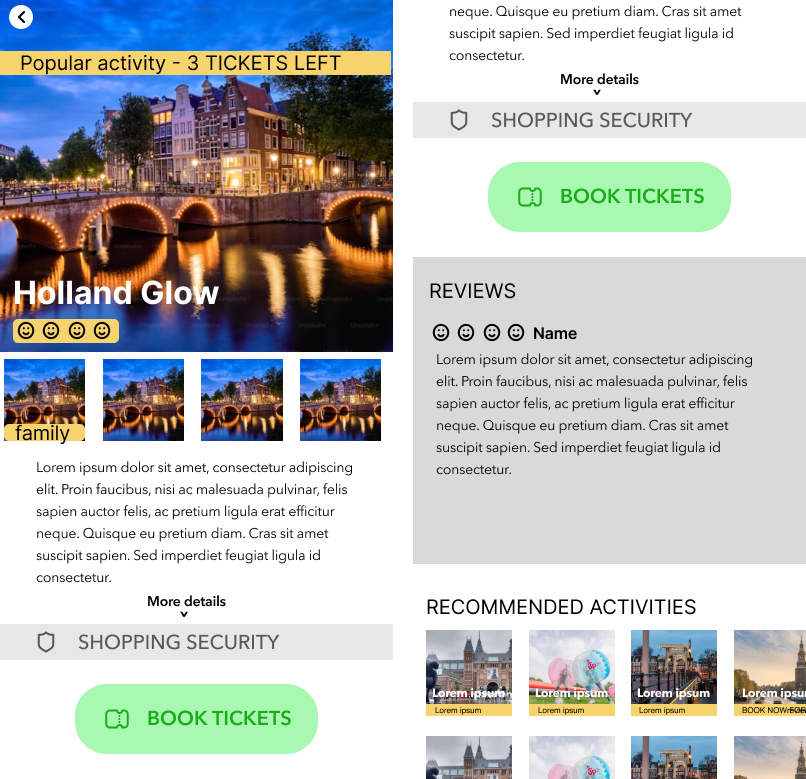
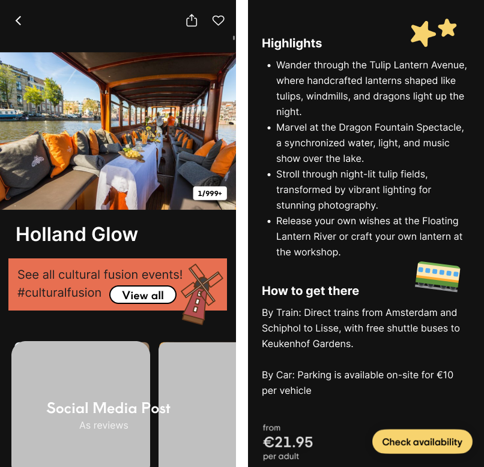
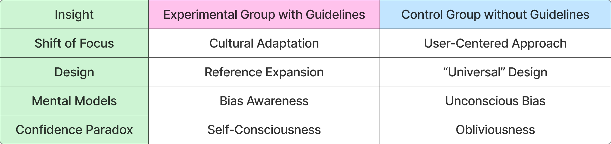

Master Thesis: Bridging Cultural UX Differences

Project Overview
Design is deeply shaped by the culture it comes from and the people it serves. What feels intuitive to one audience can seem unfamiliar or even frustrating to another.
My master thesis is an exploration of how design could move beyond translation to become a genuine act of cultural understanding. The research resulted in a set of culturally informed design guidelines for adapting Western mobile UX to Chinese users, evaluated through a comparative experiment. Two design workshops were conducted – one using the guidelines and one serving as a control group – to observe how designers interpret and apply cultural adaptations in practice.
This page highlights the key insights and outcomes from my thesis. If you’re interested in the full research process, you can access the complete work with the link below.
View ThesisResearch Context
My thesis addresses the topic of cross-cultural UX design, exploring the gap when Western design sensibilities meet Chinese user expectations. This thesis was motivated by my personal experience as a Western designer navigating the digital landscape in China, where I struggled to understand the logic and flow behind local apps, their visual density, and their interaction patterns. Although I felt completely overwhelmed initially, it also fascinated me: these differences weren’t flaws, but reflections of deeper cultural values and communication styles.
From that realization grew the core question of this research, is it possible to bridge these cultural differences in design? How can Western designers create culturally adapted experiences that truly resonate with Chinese users?
For the sake of scope and feasibility, the thesis focuses on mobile design for a travel app – a context where usability, trust, and cultural familiarity play a vital role in user experience.
I developed and tested a set of culturally informed design guidelines, examining not only what and why certain design elements should be adapted, but also how designers interpret and apply these adaptations in practice.
Research Questions
The thesis was guided by a set of questions exploring how cultural understanding can shape the design process and its outcomes:
- How can design guidelines be developed to support Western designers in creating culturally adapted mobile UX interfaces for Chinese travel apps?
- How do designers interpret and apply the guidelines when engaged in the design process?
- How do design outcomes differ between designers who use the guidelines and those who do not?
- What cultural and design principles should be incorporated to support them?
Two Stage Approach
To answer the research questions, the research was split into two stages – combining theory-driven development with practice-based evaluation.
Development of Guidelines
The first phase established the foundation and development of the cross-cultural design guidelines through:
- Theoretical foundation – examining literature on culture, UX, and design localization
- Design pattern analysis – analyze Chinese mobile app interfaces to identify recurring visual and interaction patterns
- Creating guidelines via design recommendations – translating insights into actionable guidelines tailored for Western designers
Evaluation of Guidelines
The second phase focused on testing and validating the guidelines in a design context through:
- Design workshops – engaging Western designers to create travel app interfaces with and without the provided guidelines
- Analysis of design process and outcomes – evaluating how the guidelines influenced design decisions, creativity and the overall design process
Process
A quick overview of the key stages behind the thesis research process.
Development of Guidelines
Theoretical Foundation
To ground the design framework, I examined Hofstede’s and Hall’s cultural dimensions, which highlight core differences between Western and Chinese communication and behavior patterns.
Excerpt of the key cultural dimensions considered:
- Collectivism
Chinese users often prioritize community and social connection over individual expression, influencing how trust and belonging are conveyed through interface design - Low Uncertainty Avoidance
A greater comfort with ambiguity allows for denser, more information-rich interfaces that may appear overwhelming to Western audiences - High-Context Communication
Meaning is often conveyed implicitly through visual cues, relationships, and context rather than explicit text - Polychronic Time Orientation
Users tend to multitask and engage with layered content flows, favoring non-linear navigation patterns
The research also drew from some contemporary perspectives on Chinese digital culture:
- Culture of Abundance (Wang, 2024)
Chinese apps reflect a philosophy of information richness, where abundance is seen as a positive trait - Design Philosophy of “More is More” (Qing, 2022)
Visual density, vibrant color, and dynamic elements are not seen as clutter, but as signs of engagement and abundance
Further insight came from Chinese cultural value frameworks (Romeo, 2016), which reveal how interpersonal and societal values shape user expectations:
- Guanxi 关系 (Relationship Building)
Social connections and networks are central to trust and credibility - 人情 (Moral Obligation)
Emotional reciprocity influences user interaction and brand relationships - Mianzi 面子 (Social Prestige)
Visual presentation and perceived sophistication contribute to status and self-image in digital contexts
Together, these insights informed the foundation of the design guidelines – positioning cultural understanding as a core UX design competency, rather than an afterthought in localization.
Design Pattern Analysis
To translate cultural theory into practical design insight, I analyzed four representative travel apps from the Chinese market. Each app was segmented by interface type (e.g., landing page, navigation, content feed) and examined for its visual and interaction patterns – examples shown in the image below. Recurring design characteristics were then mapped to the cultural dimensions identified earlier, revealing how cultural values directly shape UX decisions.

Example 1 – Landing Page Design
The analysis of landing pages revealed a consistent cultural orientation toward content abundance, reflecting the “More is More” design philosophy.
Rather than favoring minimalism, these interfaces embrace high information density, vibrant visuals, and layered navigation.
This approach aligns with cultures characterized by low uncertainty avoidance, where users are comfortable processing rich, overlapping information environments.

Example 2 – Collectivism
A strong collectivist orientation was visible throughout community and content features.
Many apps emphasized user-generated reviews, community rankings, and popularity indicators, creating a sense of collective trust and validation.
This design strategy reflects Guānxi (关系), the value of building and maintaining social relationships – by visually reinforcing community consensus and shared experience.

Together, these findings highlight how Chinese mobile UX design is deeply rooted in cultural logic, not just aesthetic choice. Where Western design often prizes clarity through reduction, Chinese interfaces create clarity through contextual richness – communicating credibility, engagement, and belonging through abundance and social proof.
Creation of Guidelines
Drawing from the theoretical foundation and design pattern findings, I developed a set of culturally informed design guidelines aimed at supporting Western designers in creating UX interfaces that resonate with Chinese users. Each guideline translates a core cultural insight into a practical design consideration – shifting the focus from aesthetic mimicry to cultural alignment.
The examples below represent a selection from the complete set of guidelines developed as part of the thesis. If you are interested to see the full guidelines, please refer to my thesis.
- Content Abundance and Information Density
Chinese mobile design embraces abundance over minimalism. Interfaces often present dense layers of information, rich visuals, and multiple calls to action within a single screen rather than simplifying. This approach aligns with the low uncertainty avoidance and the preference for visible abundance of the Chinese Culture. Designers are encouraged to balance richness with clarity, allowing users to explore depth without losing orientation. - Visual Communication and Multimedia Elements
In high-context communication cultures such as China, meaning is often expressed visually rather than verbally. Chinese interfaces frequently rely on image motifs, icons, and dynamic media to convey emotion and community – for instance, using visuals of people, shared moments, or collective activity to create an immediate sense of belonging. Designers could integrate multimodal communication as a central design strategy, using visuals not just for decoration but as cultural storytelling elements. - Social Validation and Community Integration
A defining characteristic of Chinese digital ecosystems is the emphasis on community-driven credibility. Features such as popularity rankings, peer reviews, and visible engagement metrics serve as forms of social validation, reinforcing trust through collective participation. Rooted in collectivist values and Guānxi (关系) – the importance of social relationships – these mechanisms transform interaction into a communal experience. Designers are encouraged intentionally create opportunities for user connection, visibility, and recognition, allowing social validation to become part of the UX flow rather than an afterthought.
These guidelines aim to encourage Western designers to move beyond universal design assumptions and engage with the cultural logic behind visual and experiential choices.
Evaluation of Guidelines
Design Workshops
To test the effectiveness of the culturally informed design guidelines, the research included two almost identical design workshops with an experimental group designing with the guidelines and a control group designing without. These workshops allowed observation of how designers interpret and apply the guidelines in practice, and how their design outcomes differ from designers without guidance.
Workshop Setup
- Duration: 120 minutes in total
- Task: Design a mobile travel app for Chinese tourists
Control Group – Designing with only the given resources
Experimental Group – Designing with the given resources and the design guidelines - Participants: Junior UX designers
- Materials: Design brief, Figma file, personas
Data Collection
- Design artifacts: user flows, low-fidelity wireframes, and interface sketches
- Interviews: reflections on design decisions, guideline interpretation, and challenges
- Video recordings: detailed observation of collaboration, workflow, and design rationale
This setup allowed for a comprehensive evaluation of how the guidelines influenced design thinking, cultural adaptation, and usability considerations in a practical design context.
Analysis
The analysis combined visual assessment of the design outcomes, thematic analysis of the interview transcripts, and a comparative evaluation of both design processes. The designs were reviewed based on their alignment with the Chinese design patterns identified earlier in the thesis, the extent to which cultural considerations informed design decisions, and the differences in information architecture, visual design, and interaction patterns between the two groups.
This analysis allowed for both process-oriented and outcome-oriented evaluation. It offered insight not only into whether the guidelines led to more culturally adapted designs, but also into how designers interpreted and integrated cultural perspectives into their design thinking.
Design Outcomes
A selection of design outcomes from both workshops is shown side-by-side – the experimental group (E) on the left and the control group (C) on the right. This comparison highlights how the presence or absence of cultural guidelines shaped each team’s visual decisions and interaction patterns. For a more in-depth analysis, please refer to the full thesis.
Landing Page

Landing Page

Event Details

Event Details

Analysis Results
This section highlights the key findings from the comparative analysis, showing how each group approached the design challenge. Their design processes and outcomes reveal distinct patterns, offering insight into how cultural guidance influenced the experimental group compared to the control group working without it.
The two workshops revealed clear contrasts in both design process and outcomes between the experimental group (with guidelines) and the control group (without guidelines). Designers who worked with the culturally informed guidelines leaned heavily into Chinese design conventions – prioritizing information density, browsing-oriented navigation, community features, and visual abundance. Their decisions consistently reflected the cultural patterns emphasized in the guidelines.
In contrast, the control group relied on familiar Western UX principles, producing cleaner hierarchies, more structured navigation, and feature-focused flows. Cultural adaptations were attempted but limited, often emerging indirectly from details of the given personas and assumptions rather than from explicit cultural reasoning.
These divergent approaches resulted in noticeably different design artifacts. The experimental group produced denser layouts, social-driven interaction patterns, and Chinese payment flows, while the control group emphasized clarity, hierarchy, and conventional Western app structures. Time allocation also differed: the experimental group invested more effort in information architecture, whereas the control group spent more time refining features according to the brief and personas.
Together, these findings illustrate how the presence – or absence – of cultural guidance can fundamentally shift the trajectory of a design process, even when both groups respond to the same brief.
The table below shows a summary of the difference between the design workshops.

Key Insights
A few important patterns emerged when comparing how both groups approached the design challenge:
- Shift of Focus
The guidelines pushed the experimental group to look beyond standard Western UX practices and prioritize cultural adaptation from the very start. - Awareness of Biases
Designers using the guidelines became more conscious of their own Western mental models – something the control group rarely did. - The Confidence Paradox
Interestingly, the group that produced more culturally aligned results often felt less confident, as the guidelines disrupted familiar design habits and evaluation criteria. - Expanded Design References
The guidelines encouraged the experimental group to explore authentic Chinese design patterns instead of relying on Western-leaning interpretations.
Together, these insights show that cultural guidelines act less as a checklist and more as a perspective-shifting tool. They help designers question default assumptions and broaden their design vocabulary – even if that process initially feels uncomfortable. The differences between the two groups weren’t merely visual, but reflected deeper contrasts in how they approached information, hierarchy, and social cues.
The table below shows a summary of the key insights from the analysis.

Conclusion
The study revealed that the guidelines served a paradoxical function – offering both support and constraint in the design process. Designers engaged most with the practical elements, while theoretical aspects were selectively applied. Beyond these findings, the research contributes to understanding how cultural dimensions can be translated into actionable design practices, providing insight into the challenges and opportunities of cross-cultural UX design. It also demonstrates the value of comparative design workshops as a method for evaluating design tools and processes.
To dive deeper into the full research, methodology, and detailed results, you can explore the complete master thesis here.
View ThesisReferences
The references shown here highlight the key sources relevant to this project overview. The full bibliography is included in the complete thesis.
Hall, E. T. (1959). The Silent Language. Doubleday.
Hall, E. T. (1976). Beyond Culture. Doubleday.
Hofstede, G. (1991). Cultures and organizations: Software of the mind. McGraw-Hill.
Hofstede, G., Hofstede, G. J., & Minkov, M. (2010). Cultures and organizations: Software of the mind (3rd ed.). McGraw-Hill.
Qing, Y. (2022, May 11). UX in China: 3 themes for designers [Video]. YouTube. https://www.youtube.com/watch?v=ohxyxGR9tsA
Romeo, P. (2016). Cross-Cultural HCI and UX Design: A Comparison of Chinese and Western User Interfaces. https://doi.org/10.13140/RG.2.2.18547.63525
Wang, F. (2024). China’s age of abundance. https://doi.org/10.1017/9781009444934